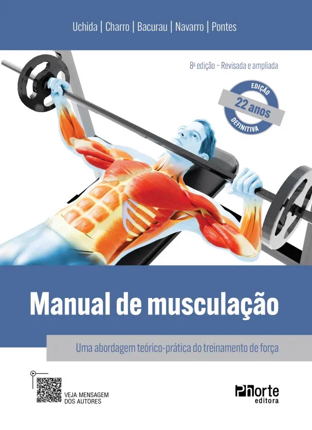
Treinamento & Força
Manual de Musculação (8ª Edição)
Por: Uchida, Charro, Bacurau, Pintes e Navarro
Referência obrigatória no Brasil sobre treinamento de força, fisiologia do exercício resistido e periodização para hipertrofia.
Selecione 1 obra de referência em Educação Física para compor seu Kit de Boas-Vindas. O exemplar físico será enviado diretamente para seu endereço com frete 100% gratuito.

Por: Uchida, Charro, Bacurau, Pintes e Navarro
Referência obrigatória no Brasil sobre treinamento de força, fisiologia do exercício resistido e periodização para hipertrofia.
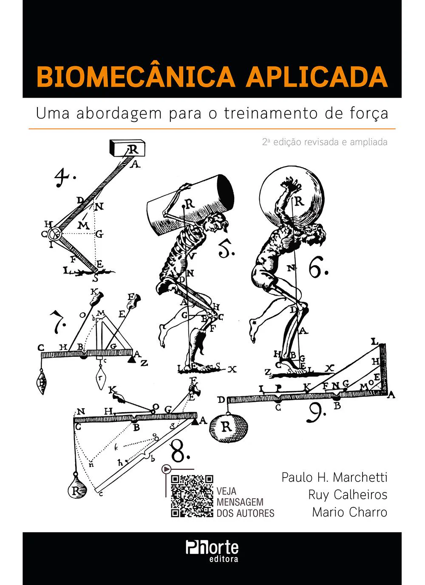
Por: Paulo Marchetti, Ruy Calheiros e Mario Charro
Uma abordagem prática e aprofundada para entender as forças mecânicas nos exercícios resistidos e prevenção de lesões.
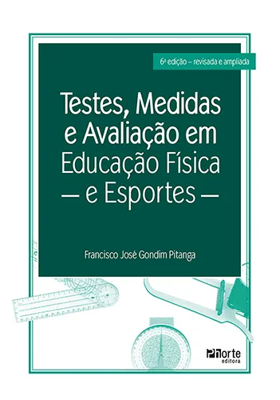
Por: Francisco José Gondim Pitanga
Protocolos completos de avaliação cineantropométrica, aptidão cardiorrespiratória e testes neuromotores.
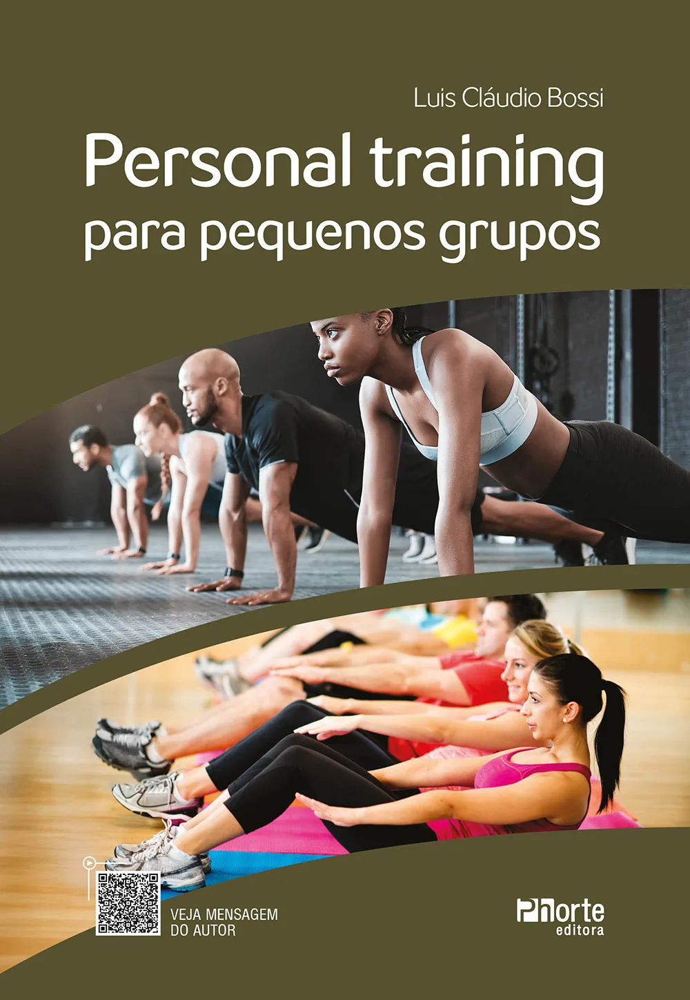
Por: Luis Claudio Bossi
Estratégias de atendimento, prescrição de treinos coletivos personalizados e gestão de negócio para personal trainers.
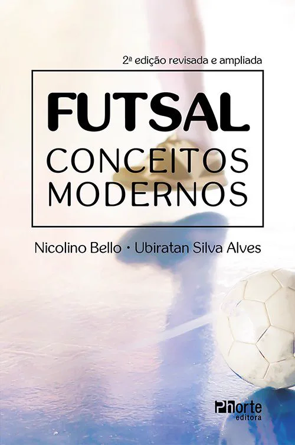
Por: Nicolino Belo e Ubiratan Silva Alves
Metodologia contemporânea do futsal, táticas defensivas e ofensivas e preparação física aplicada.
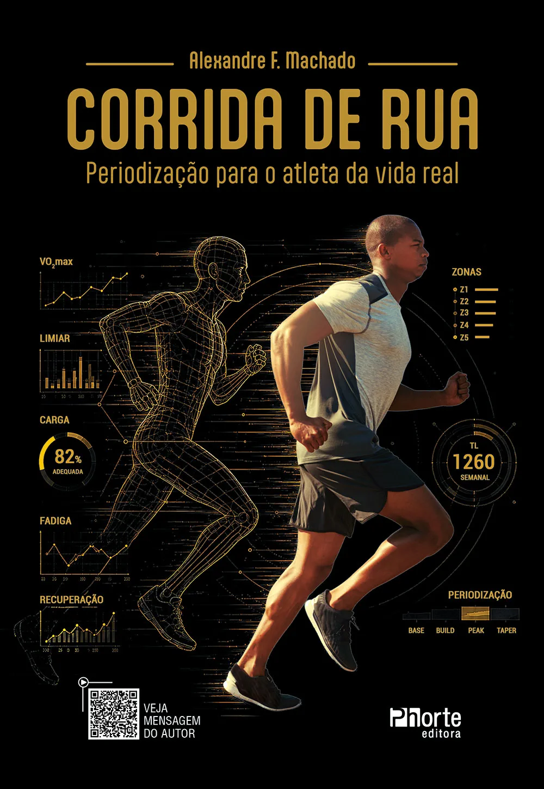
Por: Editora Phorte
Do sedentário à maratona: modelos práticos de periodização de corrida, biomecânica da passada e planilhas de evolução.
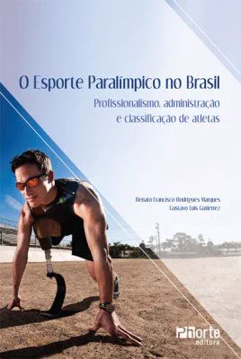
Por: Editora Phorte
Profissionalismo, administração esportiva e classificação funcional de atletas paralímpicos.
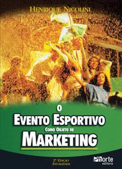
Por: Editora Phorte
Planejamento, patrocínios, ativações e estratégias comerciais de gestão em eventos de esporte.
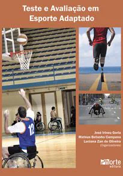
Por: Editora Phorte
Critérios científicos e testes adaptados para avaliação de pessoas com deficiência motora, visual ou intelectual.
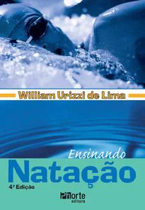
Por: Editora Phorte
Pedagogia do ensino dos 4 nados da adaptação ao meio líquido ao aperfeiçoamento técnico.
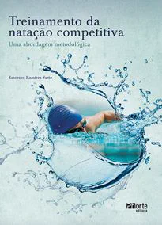
Por: Editora Phorte
Uma abordagem metodológica de alta performance para periodização, séries de treino e controle fisiológico.
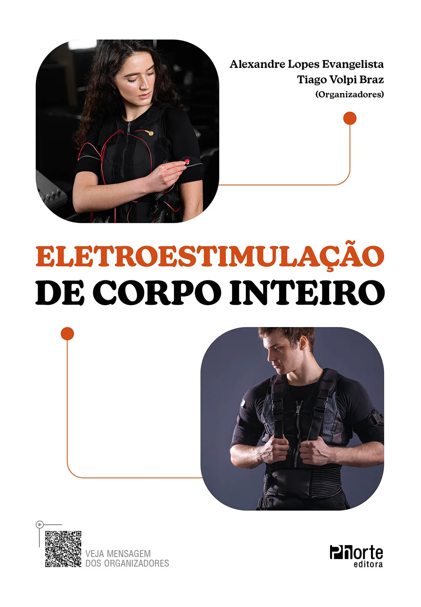
Por: Alexandre Evangelista e Tiago Volpi
Fundamentos fisiológicos, segurança clínica e protocolos de aplicação prática de EMS no fitness e reabilitação.
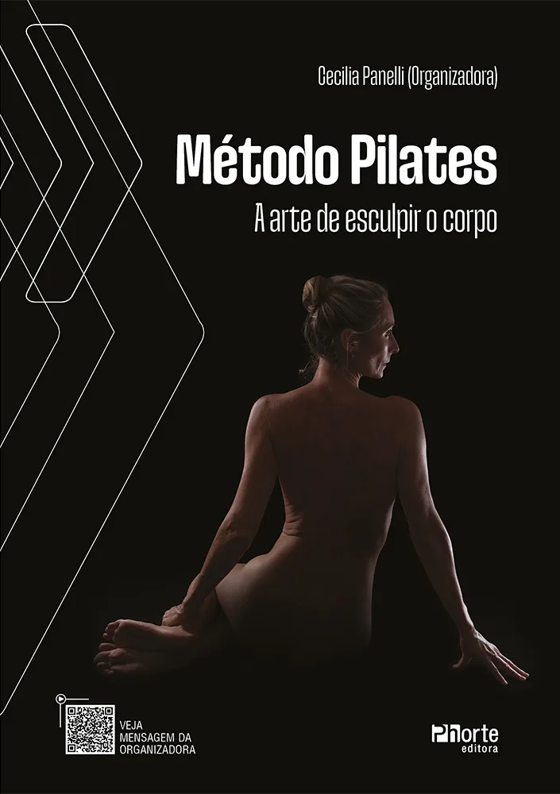
Por: Cecília Panelli
Os princípios clássicos de Joseph Pilates aplicados ao matwork, aparelhos e alinhamento postural.
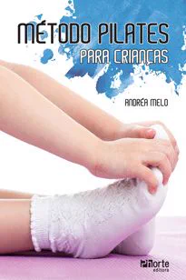
Por: Editora Phorte
Adaptações lúdicas e seguras do pilates para desenvolvimento motor, postura e concentração infantil.
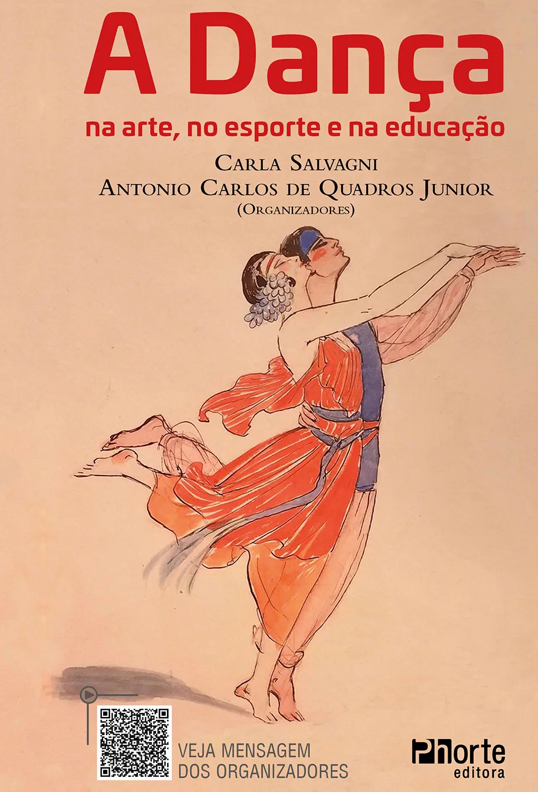
Por: Carla Salvagni e Antonio Carlos de Quadros Jr.
Expressão corporal, ritmo, coreografia e a dança como ferramenta pedagógica e formativa.
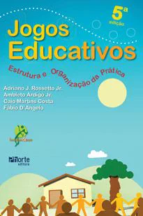
Por: Editora Phorte
Estrutura, regras, dinâmicas de grupo e organização da prática lúdica nas aulas de Educação Física.
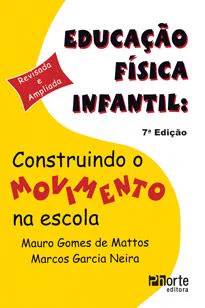
Por: Editora Phorte
Guia essencial para professores com planos de aula, psicomotricidade e desenvolvimento na primeira infância.